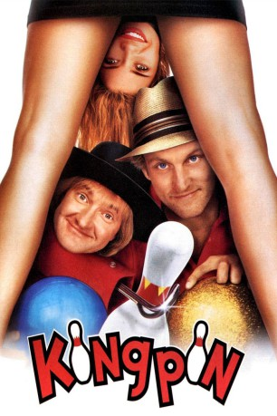
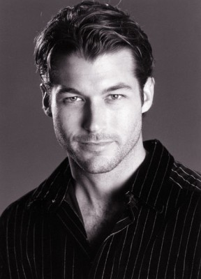
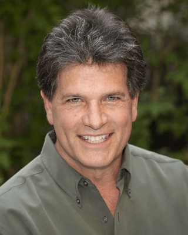
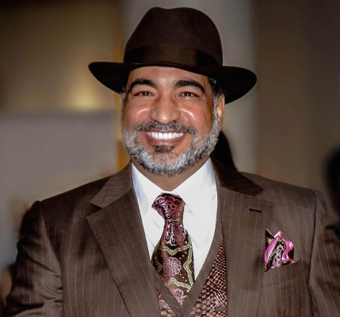
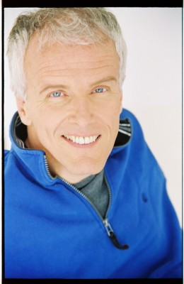
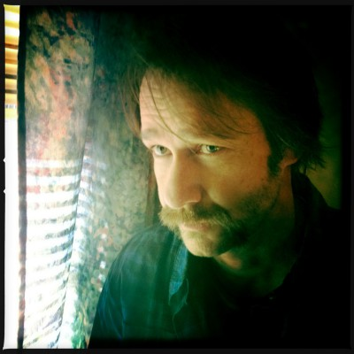
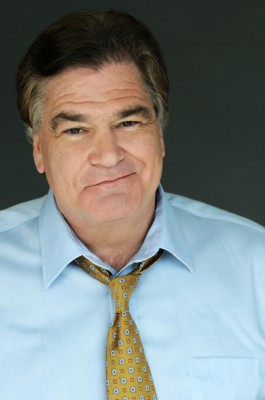
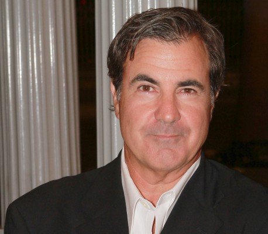
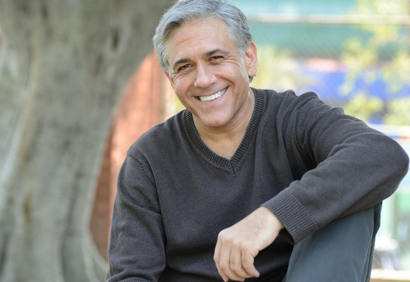

#6376 Kingpin - Zwei Trottel auf der Bowlingbahn
Alternativ: Kingpin
 
 IMDB-Wertung: 6.9 / 10
IMDB-Wertung: 6.9 / 10  Metascore: 0
Metascore: 0 
Die Zeiten, in denen Roy Munson sich noch als Bowling-Champion feiern lassen konnte, sind lange vorbei. Durch einen fiesen Kontrahenten verlor er seine Wurfhand. Gleichzeitig zerplatzten somit die Träume nach Ruhm und Geld wie eine Seifenblase. Heute ist der Ex-Bowling-König nur noch ein Alkoholiker, der zudem auch noch knapp bei Kasse ist. Aber wegen Ishmael, einen Amishanhänger, sieht Roy Munson wieder Licht am Ende des Tunnels. Denn mit diesem Bowlingnaturtalent hofft Munson, einen großen Fang gemacht zu haben ...
Jahr: 1996
Dauer: 112 Minuten
FSK: 12
Land: USA Studio: MGM/UA Distribution Co.Tonspuren: DD2.0 - ,
Untertitel:
Auflösung: 1080p (1920x824) Größe: 8192 MB
Genre: Komödie, Sport
Regisseur:  Bobby Farrelly, Peter Farrelly
Bobby Farrelly, Peter Farrelly
Drehbuch: Barry Fanaro
Soundtrack:
Darsteller:
 Woody Harrelson als Roy Munson
Woody Harrelson als Roy Munson Randy Quaid als Ishmael
Randy Quaid als Ishmael- Vanessa Angel als Claudia
 Bill Murray als Ernie McCracken
Bill Murray als Ernie McCracken Chris Elliott als The Gambler
Chris Elliott als The Gambler Richard Tyson als Owner Of Stiffy's
Richard Tyson als Owner Of Stiffy's Lin Shaye als Landlady
Lin Shaye als Landlady-  Zen Gesner als Thomas
 Rob Moran als Stanley Osmanski
Rob Moran als Stanley Osmanski-  Daniel Greene als Calvert Munson
 Will Rothhaar als Young Roy
Will Rothhaar als Young Roy-  Sayed Badreya als Fatima
- Linda Carola als 1979 Waitress
-  Danny Murphy als Beaver Valley Bowl Manager
-  David Shackelford als Red Neck Stutterer
-  Mike Cerrone als Beaver Bowl Hustler
- Rick Barker als Beaver Bowl Hustler
- Michael Corrente als Scranton Wino
- Suzan Hughes als Cocktail Waitress
 Googy Gress als Lancaster Bowl Manager
Googy Gress als Lancaster Bowl Manager Willie Garson als Purse Snatcher
Willie Garson als Purse Snatcher- Gretchen Treser als Make-Out Queen
-  Jackie Flynn als Dog Boy
- Jonathan Richman als Tavern Band
- Libby Langdon als Skidmark's Squirrel
- Liza Oxnard als Tavern Drunk
- Andre Rosey Brown als Skidmark's Friend
- Lorri Bagley als Beautiful Dancer
-  Steve Tyler als Gas Station Attendant
- John Popper als Bowling Tournament Announcer
- Chris Berman als Himself
- Preston Thomas als Tournament Liaison
 George Christy als Stiffy's Announcer
George Christy als Stiffy's Announcer- Susan A. Burig als Extra
- Kim Greene als Extra
- Paula Gregg als Extra
- Jimmy Badstibner als Special Appearance By
- Branden Cook als Special Appearance By
- Joseph Del Giodice als Amish Farmer , uncredited
- Barret Hackney als Amish Boy , uncredited
- Joby Harris als Amish Boy , uncredited
- Herb Santos Jr. als Stadium Worker , uncredited
- Cory A Santos als Pro Bowler , uncredited
- William Jordan als Mr. Boorg
- Prudence Wright Holmes als Mrs. Boorg
- Mark Charpentier als 1979 Bowling Buddy
- Brad Faxon als 1979 Bowling Buddy
- Billy Andrade als 1979 Bowling Buddy
- Paul DeWolf als 1979 Bowling Buddy
- Jill Lytle als Odor Eater Babe
Datei: X:\1996\Kingpin - Zwei Trottel auf der Bowlingbahn (1996, FSK12, 1920x824).mkv seit 12.06.2017
Festplatte: HD 1996-2002
 Es gibt insgesamt 78 Filme in der Gruppe '1996'
Es gibt insgesamt 78 Filme in der Gruppe '1996'